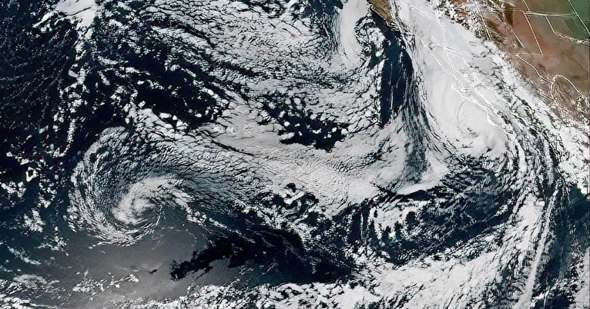

Los Angeles has "mobilized and is ready" for Hurricane Hilary, according to city leadersThe city of Los Angeles has "mobilized and is ready" for landfall of Hurricane Hilary with city departments prepared to respond to any potential crisis, officials said. "Whether it be wildfires or earthquakes, the city is prepared," Mayor Karen Bass said during a news conference at City Hall on Friday, surrounded by the general managers of several city departments. "We're not waiting for the storm to hit. We have already began working 24/7 to be ahead of the curve and to be ready as soon as the storm reaches our shores." Hilary was at on Saturday evening, and is expected to hit the city early Sunday and continue through Monday. Hilary is expected to weaken to a tropical storm by the time it reaches the Southland, but forecasters are still warning of heavy rain, wind and a high risk of flooding. "This morning, I was briefed by the National Weather Service about the coming storm," Bass posted Saturday on X, formerly Twitter. "Angelenos should take this storm seriously — stay SAFE and stay INFORMED. Follow @NWSLosAngeles , @ReadyLA and @NotifyLA for updates as we continue to prepare for #HurricaneHilary." Bass said Friday that she received a call from Secretary of Homeland Security Alejandro Mayorkas to let her know he will be available 24/7 as the city weathers the storm. The city has federal support on hand "should we need it," she added. Related: The state's Emergency Management Department will activate its Emergency Operation Center to monitor and manage any incidents and impacts on the city, as well. "311 will be expanding operating hours if there is a high call volume. LAFD Fire Chief (Kristin) Crowley will oversee the Emergency Operations Center. The fire department is fully staffed to respond to this potential rainfall as it impacts, and teams are coordinating and collaborating across the city," Bass said. Late Saturday, Mayor Bass announced the activation of the city's Emergency Operation Center, beginning with a Level 2 response, according to a tweet she sent. The center has been activated to "prepare for and manage expected results of the first landfall of a tropical storm in Southern California in more than 80 years," according to the EOC's website. California's National Guard contingent has also "strategically pre- positioned resources throughout Southern California" as part of the statewide effort to prepare for the storm, officials said Saturday. The Department of Water and Power has restoration crews fully staffed and ready to respond to any power outages. Streets L.A., L.A. Sanitation and the Department of Transportation are taking steps to ensure roads are operational -- before, during and after the storm -- according to Bass. "The city of Los Angeles is working with Los Angeles Housing Services Authority to identify resources citywide that can be used for Angelenos experiencing homelessness during the storm," Bass said. "Recreation and parks facilities have been pre-identified should evacuation and our shelters be needed." Animal shelters and specialized rescue teams are ready to respond to evacuations or rescue in the event of such incidents in the city. The central library will be providing rain ponchos and T-shirts to patrons while supplies last. "As the city prepares, we need Angelenos to prepare. Angelenos should register for Notify LA for local alerts regarding the storm. Angelenos can follow at ReadyLA on social media channels for event developments and general resources to stay informed," Bass said. The mayor urged Angelenos to stay away from the shoreline and beaches throughout the duration of the storm. Related: Hurricane safety tips and resources can viewed at noaa.gov/hurricane- prep. In the event of a life threatening emergency, Angelenos should call 911. For impacts such as roadway flooding, tree limbs blocking roads or mudslides, Angelenos should request service online or by calling 311. In the event of power outages or water main breakages, DWP customers can call 800-DIAL-DWP (342-5397). "There is a reason why our resources are dispatched worldwide to respond to disaster," Bass said. "We will be prepared and as always, we will be in coordination with the city, county, state and federal levels as we move forward." Carol Parks, general manager of the city's Emergency Management Department, said the tropical storm will bring winds from 39 to 73 mph, and possible isolated rain and thunderstorms could begin as soon as Saturday afternoon. Related: Winds will increase Sunday evening with a flood watch in effect through 11 p.m. On Monday, the region is expected to receive anywhere from two to four inches of rain, totaling across L.A. County, with up to seven inches possible in the San Gabriel Mountains and foothills. There could be major roadway flooding, which could be a concern for the metro area with a change of elevated surf and some coastal flooding, Parks said. Crowley said Angelenos can pick up free ready-to-fill sandbags at neighborhood fire stations. Alfred Labrada, assistant chief of the Los Angeles Police Department, urged Angelenos to stay informed, prepare and to adhere to evacuations. Aram Benyamin, chief operating officer for DWP, reminded everyone to be patient as crews address power outages, and to stay away from any fallen power lines. "We have been doing inspections of our infrastructure, as we anticipate high levels of (water) flow. So, we have made arrangements for the water flow from our northern aqueduct and reservoirs that we have in town, and we are ready to make sure that the flows are not impacting our infrastructure," Benyamin said. "We have resources on the ground to make sure that infrastructure restoration is going to be taking place and make sure that the system can withstand the needs of the city." The looming storm has . City officials announced Saturday that all county parks, buildings and facilities would be closed Sunday and Monday, including, but not limited to: - Picnic shelters; - Playgrounds; - Multi-use trails; - Restrooms; - Botanical gardens and arboretums; - Lakes and swim beaches; - Pools and aquatic centers - Natural areas and nature centers - Performance venues. While the parks are not fenced in, visitors are encouraged to stay home. for more features. |
 |